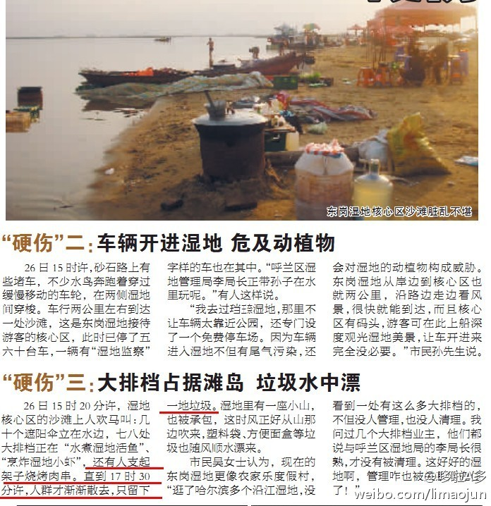
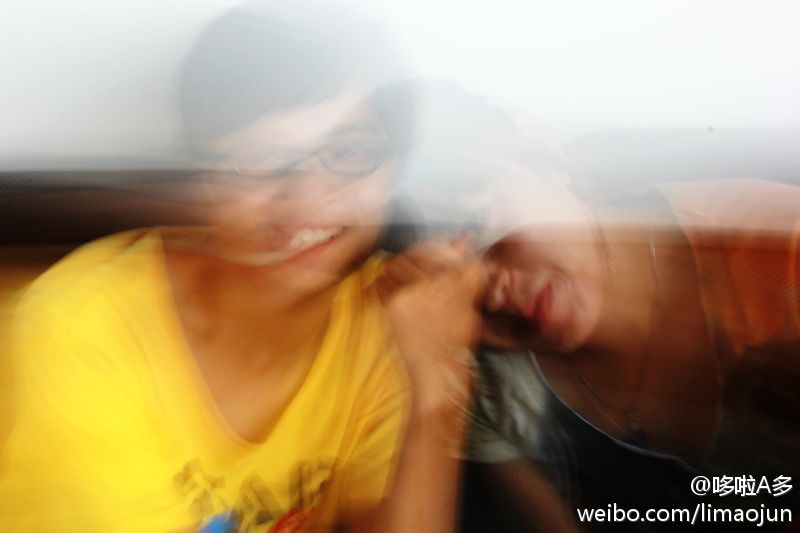

去野外烧个烤还上报纸了~我们也没乱扔垃圾啊，都放在箱子里整理好了让收拾垃圾的带走了，都是有公德心的人~~你们这帮臭不要脸的做媒体的怎么能瞎说呢~你他妈不也是去江边吃鱼、烧烤的啥的么！艹~ 也不知道是@生活报 的哪个傻逼记者写的 
你看到的不一定都是真的~这都素幻觉~~幻觉啊~~~他俩的肉体离了一米多~你看到的是他俩的意念~他俩的灵魂~在一起~啊~在一起……搜狐微博 @搜狐焦点孙蕊 @搜狐焦点王晶 @于庆胜 ，新浪微博 @Vermouth小苦 